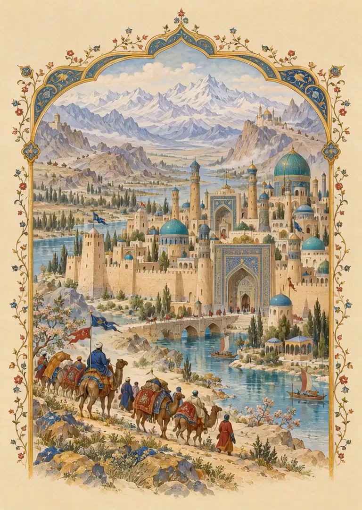
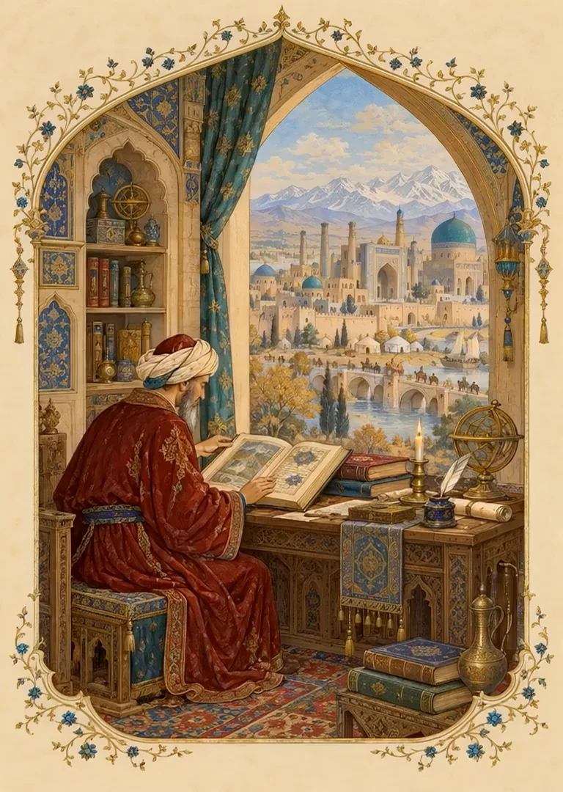
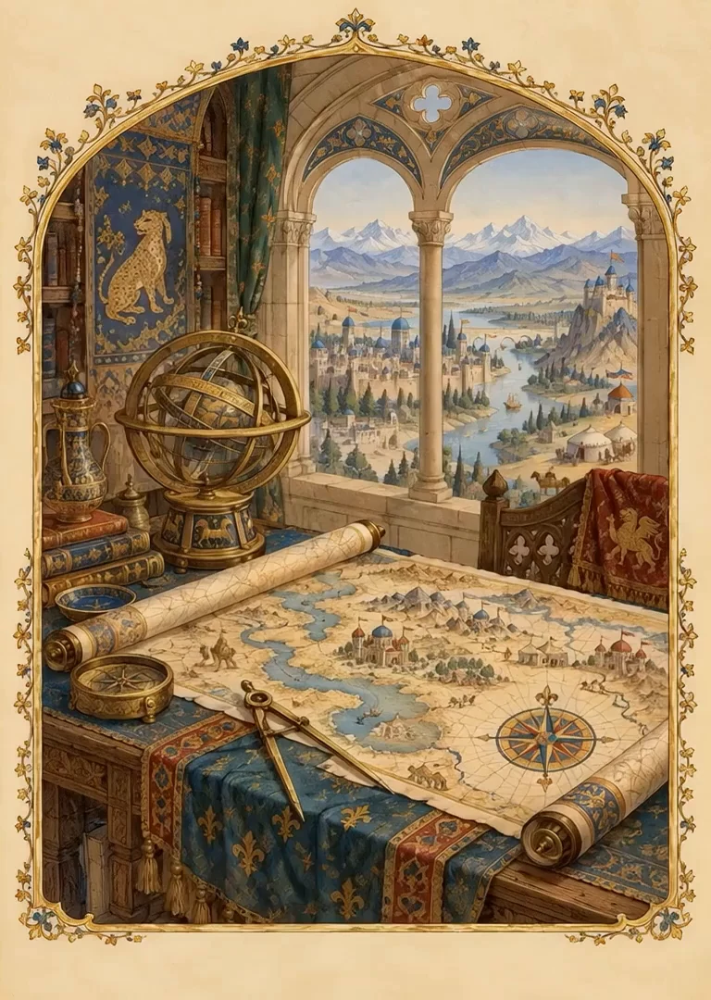
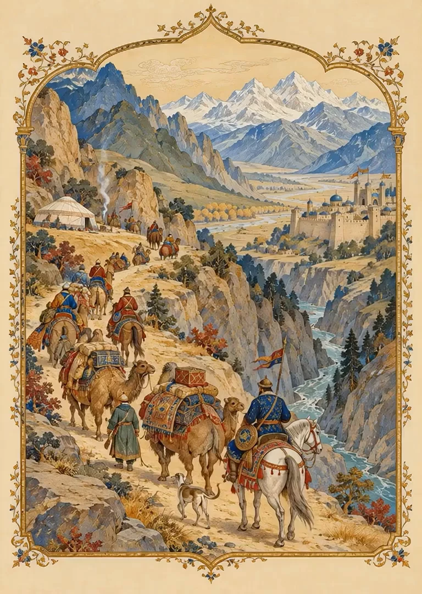
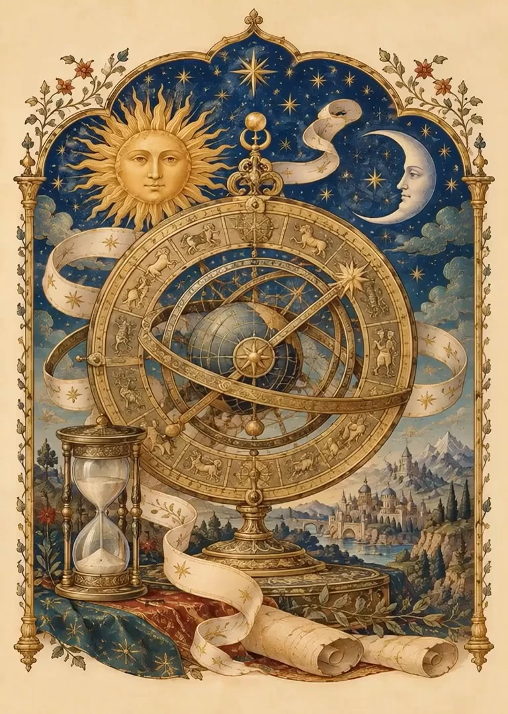
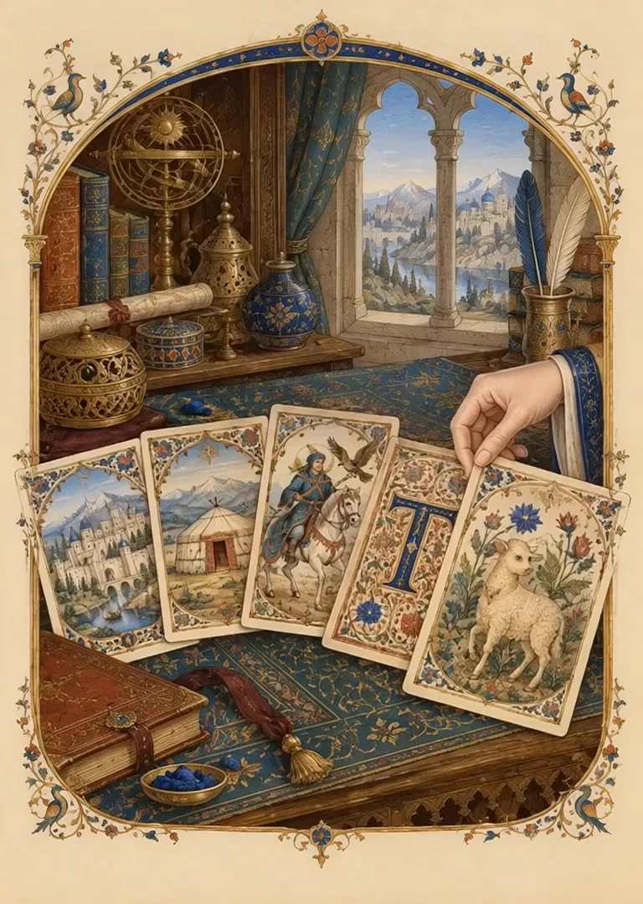
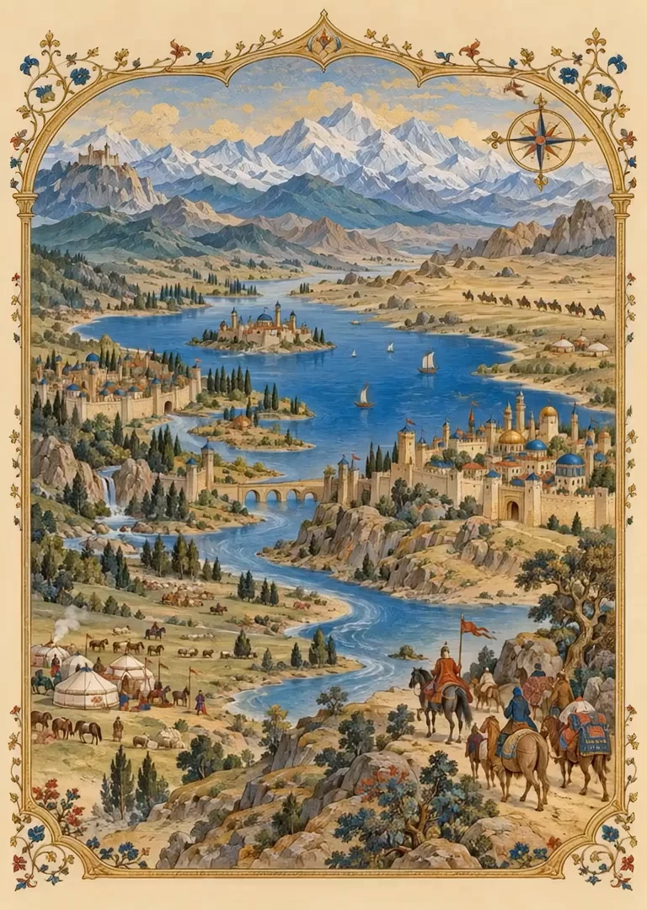
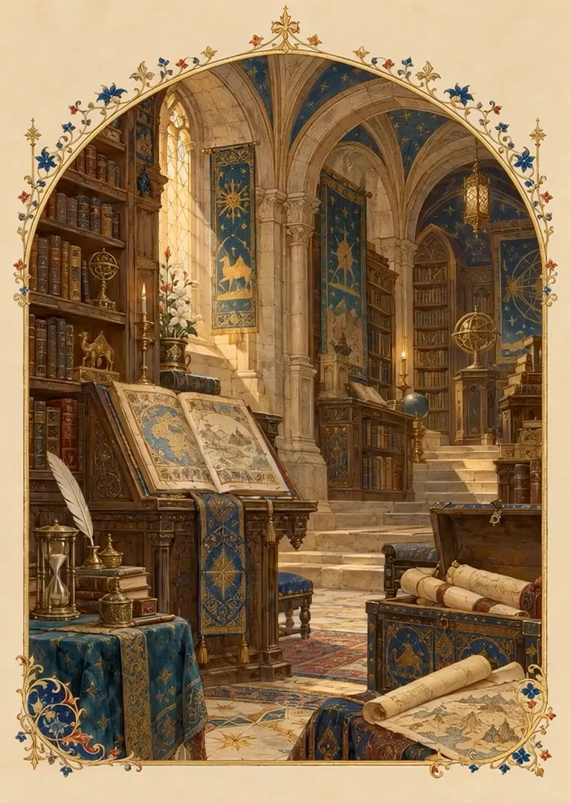

Chapter I
Grand Tartary
Beyond the familiar edge of old maps lies a name that once stretched across Asia: Tartary. Cities, caravan roads, distant courts, and extraordinary tales fill the pages left behind.
This Atlas gathers those maps and voices. Turn the leaves to choose your own way into their world.
Ortelius’s Tartary, 1570

Chapter II
Voices from afar
A traveler enters a strange city. An envoy is welcomed at court. A chronicler records a custom that astonishes him. Their words are still here, waiting to be read.
Explore passages about cities, buildings, daily life, names, and marvels. Every quotation leads back to its source.
Stories in the witnesses’ own words

Chapter III
The painted world
Mountains rise like little crowns. Rivers wander through kingdoms. A name stretches across the blank spaces. Each map offers a world as its maker imagined and understood it.
Wander through centuries of original maps. Look closely at their lettering, their borders, and the remarkable details hiding in the margins.
Original sheets, open to a closer look

Chapter IV
Across the steppe
Saddle a horse. Cross a river. Arrive at a city whose name you have only seen on parchment. Follow the roads of travelers who ventured into Tartary and wrote of what they found.
Six journeys unfold stop by stop, with the route beside you and the traveler’s words along the way.
Follow a witness into the distance

Chapter V
The turning ages
Tartary never sits still on the page. Through the centuries, mapmakers place the name differently, stretch its reach, and draw new boundaries around it.
Turn the dial to lay one historical sheet over another. Watch the maps change, lift a sheet, and follow the traces of earlier names.
Many maps upon one shared earth

Chapter VI
A little serendipity
Perhaps today brings a great city, an unfamiliar custom, or a tale strange enough to linger in your mind. Let the archive surprise you.
Draw a hand of illustrated cards. Turn one over to discover a passage, then follow its thread as far as curiosity carries you.
A place, a people, a marvel

Chapter VII
Where stories meet
A river in one account becomes a crossing in another. A city welcomes travelers centuries apart. Place the witnesses side by side, and new paths begin to appear.
Explore the places named in the record. Follow a town, a region, or a people back to the sources that describe them.
Find the stories gathered around a place

Chapter VIII
Deeper in the archive
Every discovery has another door behind it. Meet the writers, trace the families of old maps, and seek the places and peoples scattered through their pages.
The vault opens the whole catalogue, along with the research notes and the questions that remain. There is always another thread to follow.
Books, maps, witnesses, and unfinished questions